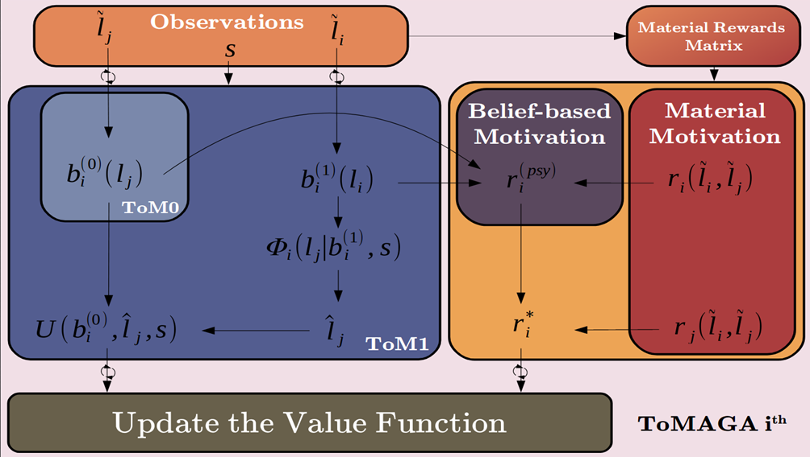
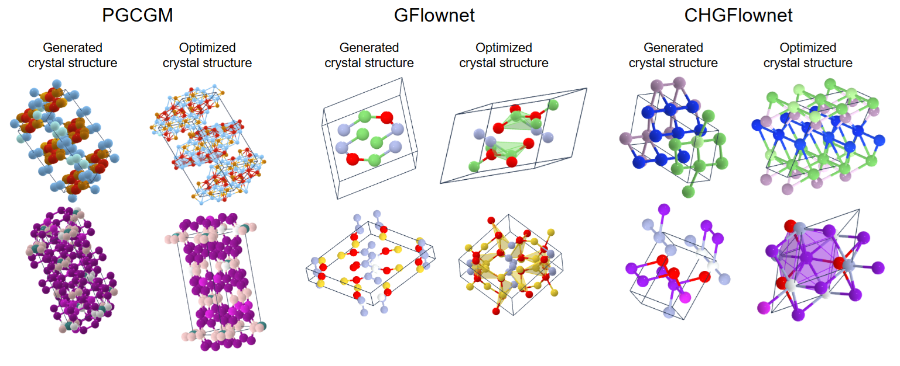
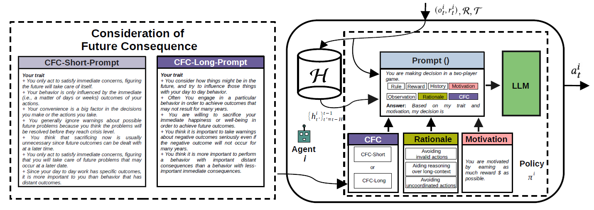
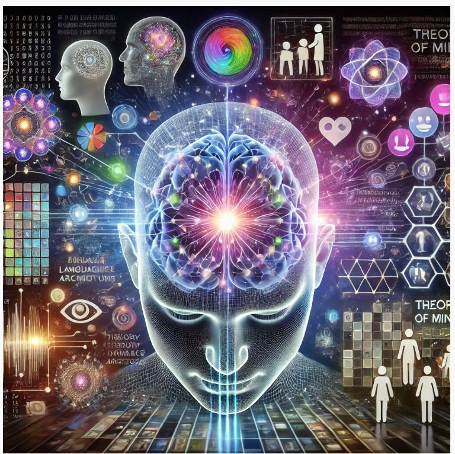
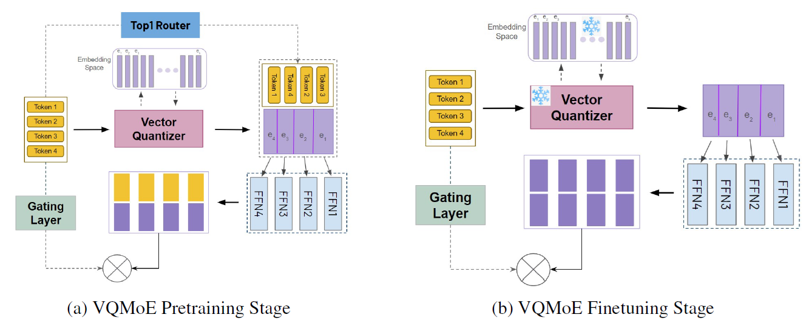
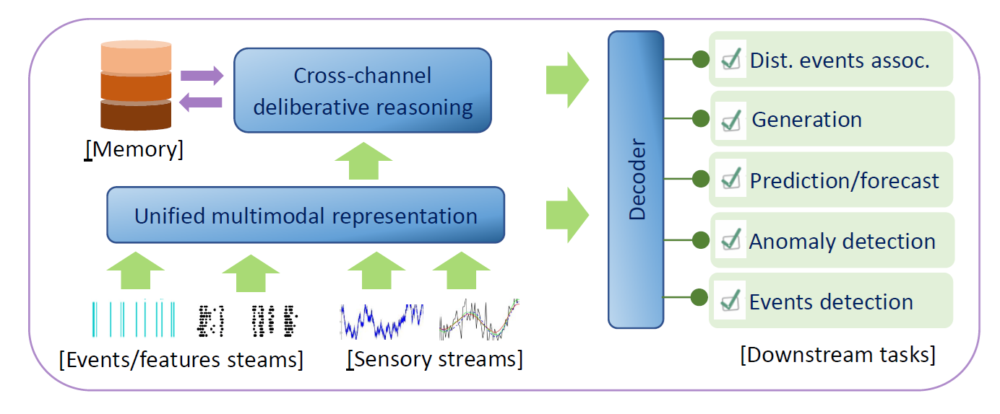
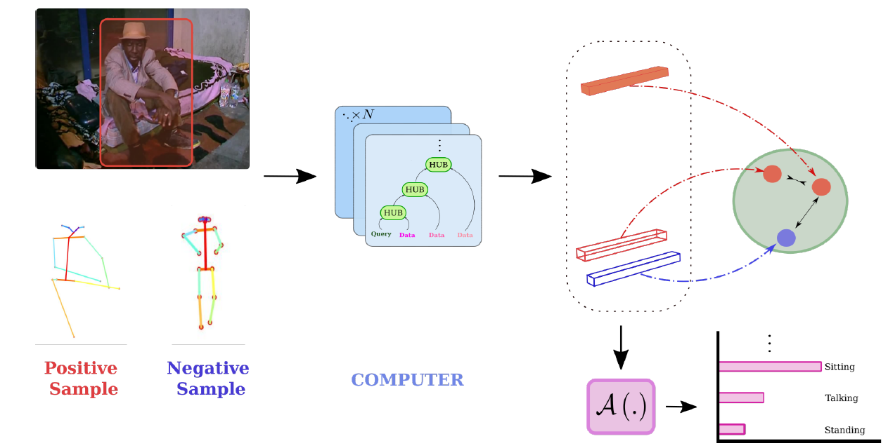

[Source: rdn-consulting]
AI Future Projects
| »
Recomender systems: Random fields » Ordinal choice modelling » Conditional random fields » Advances in Restricted Boltzmann Machines » Software projects analytics and automation » Software language models |
»
High-dimensional model stability » RNNs for structured data » Advances in representation learning » Understanding GANs » Learning relational structures in time » Learning to represent episodic data |
New inductive biases in deep learning
This research project explores novel architectural designs for neural networks, drawing direct inspiration from biological neural systems. By studying the structural organization of the brain, particularly the columnar architecture of the neocortex and the routing mechanisms of the thalamus, we develop modular networks optimized for diverse data types including matrices, tensors, graphs, and relational data. Our approach integrates key cognitive mechanisms such as working memory for enhanced problem-solving capabilities and episodic memory for temporal information integration. This biomimetic framework aims to improve neural network performance by incorporating proven solutions from neuroscience, potentially leading to more robust and adaptable AI systems.
Column Networks, as inspired by the cortical columns, to solve multi-relational learning.
Memory architectures for neural networks
While current deep learning systems demonstrate remarkable capabilities in pattern recognition, they struggle with higher-order cognitive tasks like complex system manipulation, rapid adaptation, and maintaining coherent long-term interactions. This research addresses these limitations by developing novel memory architectures that move beyond simple pattern matching. Our approach implements explicit memory systems capable of robust generalization, reduced reliance on rote memorization, and program-like information storage. This framework forms the foundation of a comprehensive cognitive architecture that seamlessly integrates learning, reasoning, and creative processes. By incorporating these advanced memory mechanisms, we aim to bridge the gap between current AI capabilities and human-like cognitive flexibility and contextual understanding.
Generative models with variational memory
Compositional reasoning in vision-language domains
Compositional reasoning over complex queries.
Learning for relational and causal reasoning
Relational Dynamic Memory Network, a model for detecting relations between graphical structures.
Indirection mechanisms for better generalization
A system for abstracting out visual details, focusing on relations between images via an indirection mechanism. This is capable of solving IQ problems.
Theory of mind architectures
This research develops artificial intelligence systems capable of understanding and attributing mental states to others—a fundamental aspect of human social cognition. Drawing from developmental psychology, cognitive science, and anthropology, we design architectures that enable AI agents to engage in sophisticated social interactions. Our approach encompasses multiple innovations: role-learning frameworks for cooperative agents, guilt-aversion mechanisms to enhance cooperation, and memory-augmented neural networks for processing long-term social experiences. Particular emphasis is placed on developing false-belief understanding, allowing agents to recognize that others may hold beliefs incongruent with reality. The project aims to create more socially intelligent AI systems that can effectively collaborate in team environments.

A system of multi-agents equipped with social psychology.
Efficient exploration of combinatorial spaces
This research addresses the fundamental challenge of navigating vast combinatorial search spaces in critical domains including structural design, materials science, drug discovery, and network optimization. Given the exponential growth of possible solutions with problem size, traditional exhaustive search methods become intractable. We develop novel generative AI approaches that intelligently balance exploration of new possibilities, exploitation of promising solutions, and maintenance of solution diversity. Our methods employ advanced sampling strategies and learning algorithms to efficiently traverse these complex spaces, enabling practical solutions to previously intractable problems. This work aims to accelerate discovery and optimization processes across multiple scientific and engineering domains.

Crystal structures generated and optimized by several generative AI techniques.
Collaborative priors for LLM-powered multi-agents

LLM-agent prompted with social priors.
Theory of mind in LLMs
| This research investigates and enhances Large Language Models' capacity to understand and reason about mental states of others—a capability not inherently developed through standard training processes. While LLMs excel at text compression and instruction following, their ability to model others' beliefs, intentions, and knowledge states remains limited. We analyze how these models currently represent and process social understanding, and develop novel architectures and training approaches to explicitly incorporate theory of mind capabilities. Our work spans multiple dimensions: mental state attribution, belief modeling, intention recognition, and social reasoning. The project aims to create more socially intelligent language models that can better understand and navigate human interactions. |  DALL.E3 illustration of Theory of Mind in LLMs. |
Scaling with sparse mixture of experts

Discrete representation for MoE.
Representing and reasoning over noisy data: Thinking, fast and slow
Partners: Australian Department of Defence
Duration: 2022-2025

A general framework for thinking fast and slow in dealing with noisy sensors.
Structured reasoning in video

An architecture to model human activity in context.
Human
behaviour
understanding in video
This research
develops advanced AI systems for comprehensively analyzing human
behavior in video data across diverse environmental contexts. Our
approach integrates multiple levels of analysis: trajectory modeling,
social interaction patterns, causal inference of trigger events, and
prediction of actions and intentions. We incorporate fundamental human
behavioral principles as inductive biases, including goal-directed
behavior, environmental affordances, and commonsense reasoning. The
project culminates in developing a multimodal foundation model that
seamlessly processes video, text, and object information, grounding
abstract knowledge in concrete visual observations. This framework
enables deeper understanding of human behavior in both static and
dynamic camera scenarios.
Partners: iCetana
Detecting anomalies in video using skeleton trajectories (last row)
This research advances AI systems' ability to comprehend and answer natural language questions about visual content, bridging low-level pattern recognition with high-level symbolic reasoning. We develop dynamic computational architectures that enable iterative reasoning processes, guided by linguistic queries to analyze visual scenes. The project encompasses several key innovations: query-specific neural architectures for spatio-temporal object interaction analysis, frameworks for understanding complex human-object relationships and events, and novel multimodal prompting strategies for few-shot learning in Large Vision Language Models. This work aims to create more sophisticated visual reasoning systems capable of handling complex, multi-step queries about visual content.
Answering questions about a video.
This research develops advanced systems for natural conversations about video content of any duration. We create neural-symbolic architectures that combine visual understanding with dialogue capabilities, enabling AI to engage in meaningful discussions about video content. Our approach parses complex video sequences into structured representations of object trajectories and their interactions, maintaining dynamic dialogue states that evolve with conversation. The system employs sophisticated neural-symbolic reasoning mechanisms to track object relationships across space and time, while managing conversation history to ensure contextually coherent responses. By integrating object-oriented representations with self-attention mechanisms, we enable comprehensive understanding of long-range temporal dependencies and complex narratives in video content.
A model for multi-turn video dialog.